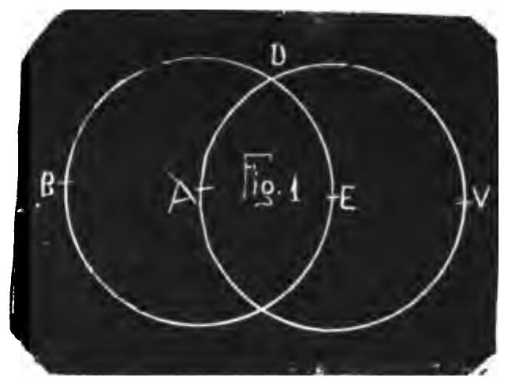

§§ 1–5: Principles & Fundamental Compass Operations¶
BOOK ONE
PRELIMINARY
1. I call Geometry of the Compass that which, by means of the compass alone without the straightedge, determines the position of points.
Given for example two points A and E (fig. 1); if the third point D be sought, which is as far from each of them as they are from each other, let the two circles \(EDB\), \(ADV\) be described with interval or radius AE and centers A and E, cutting each other at point D; this point will be the one sought, since it will be distant from points A and E by an interval equal to AE (Eucl. I.1). This point D has been found with the compass alone without the straightedge.


2. It may happen that the position of a point is found with the compass alone, yet to demonstrate the proposition there is need to construct the figure by means of the straightedge.
If, for example, given two points \(A\) and \(B\) which are distant
f. 0041 · p. 12from each other by a certain interval, which is taken for unity, or set \(= 1\), let a point \(D\) be sought which is distant from \(B\) by the interval \(BD = \sqrt{3}\); the solution of the Problem will be as follows.
With center \(A\) (fig. 2), radius \(AB\), describe the circle \(BCD\). With the same radius, center \(B\), describe an arc cutting the circumference at \(C\). Again with the same radius, center \(C\), describe an arc cutting the circumference further on at \(D\). This will be the point sought, and found without the straightedge.
To demonstrate nevertheless that the interval is \(BD = \sqrt{3}\), straight lines will be needed, which are drawn with the straightedge. Let \(BE\) be the diameter of the circle \(BCD\), and let straight lines \(BD\), \(DE\) be drawn. Triangle \(BDE\) will be right-angled at \(D\) (Eucl. III.31). Therefore the square on \(BE\) will be equal to the sum of the two squares on the straight lines \(BD\) and \(DE\) (Eucl. I.47); and hence the square on \(BD\) will be equal to the difference of the squares on \(BE\) and \(DE\). But since the interval \(BC = CD = AB\), we shall also have \(DE = AB\) (Eucl. IV.15), or \(DE = 1\). Also \(BE = 2\). Therefore \((BD)^2\), that is, the square on \(BD\), will be equal to \(4 - 1 = 3\); and hence its root \(BD = \sqrt{3}\). Which was to be demonstrated, and could not be done without the straightedge. This proposition is the 12th of Book XIII of Euclid.
3. From the definition of this Geometry of the Compass (§ 1) it is clear that all Problems belong to it which can be solved with the compass alone, even though by it alone they cannot be demonstrated; as is the preceding Problem (§ 2).
4. The use of this Geometry will be very great, as will appear from the examples, in finding points in practice with the greatest possible precision, and often much more expeditiously with the compass alone than by calling the straightedge also to our aid.
5. It will therefore be our office to solve Problems with the compass alone; it will then be permissible to make use of demonstrations constructed according to custom with the compass and straightedge, to which end we shall cite the propositions and books of Euclid.